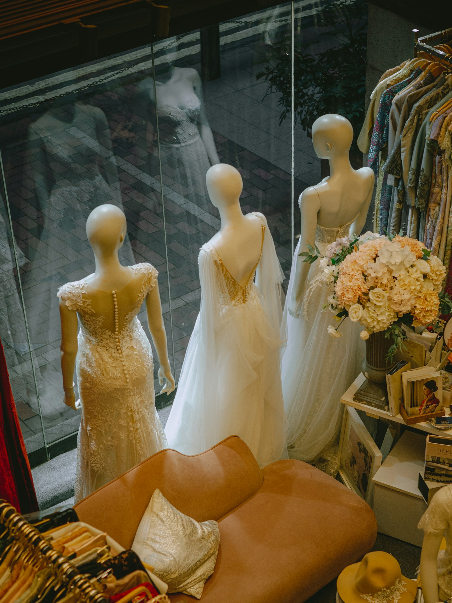
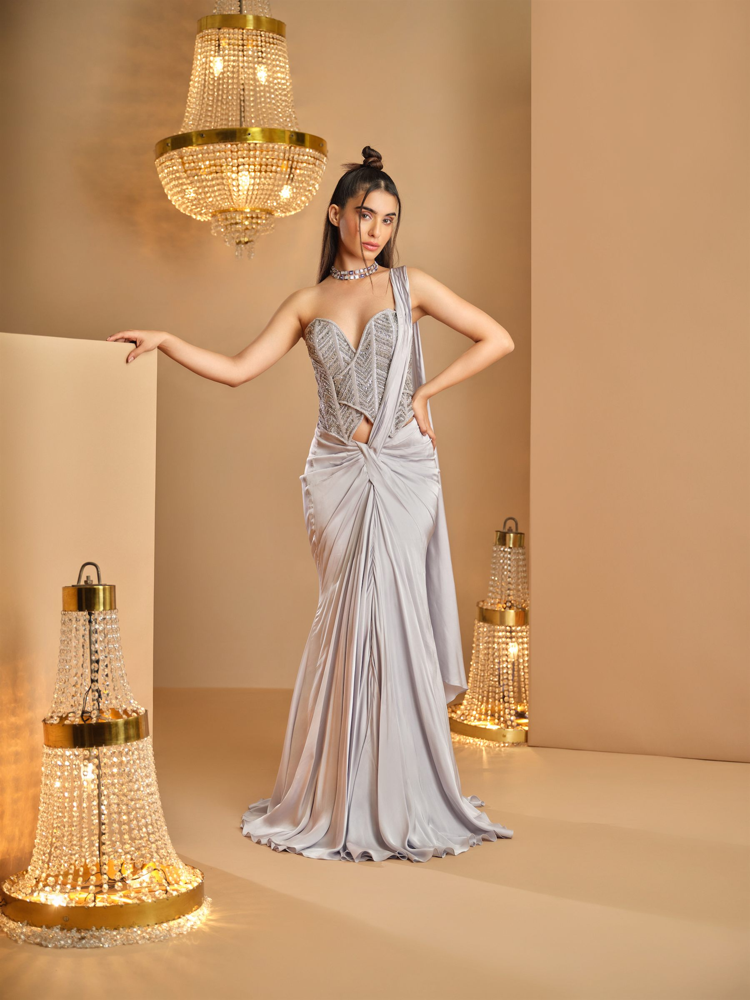

Santacruz West, Mumbai
A real address, a fitting mirror, and the quiet particular to a house where every piece is made once, for one person. Walk in, or write ahead — either way, we're glad to have you.
Where to Find Us
Ganga Building, 2A, Talmaki Road
Potohar Nagar, Santacruz West
Mumbai, Maharashtra 400054
The K&A atelier is a real, working studio on Talmaki Road — not a hidden address. We welcome walk-ins, though a booked appointment lets us prepare your consultation, your measurements and our full attention in advance. However you arrive, you'll be looked after the same way.
A Visit, in Brief


The Atelier
Walk in, or write ahead — either way, we're glad to have you. Message us and we'll make sure you're expected.